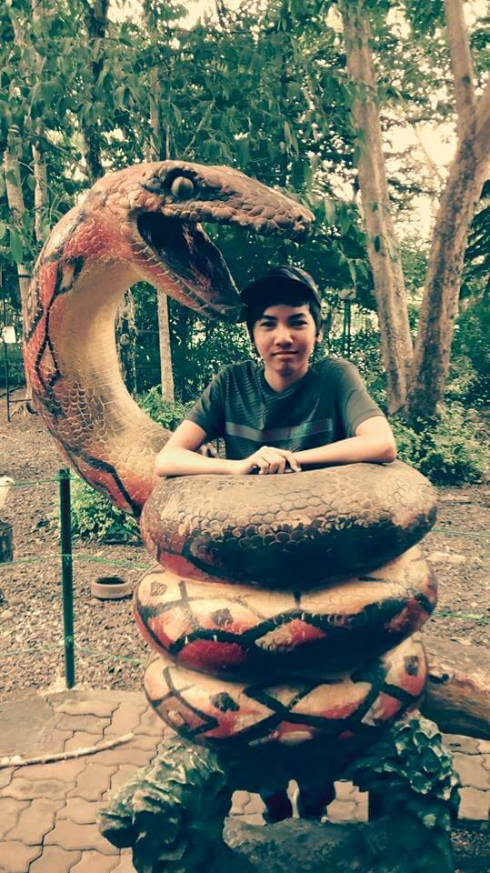
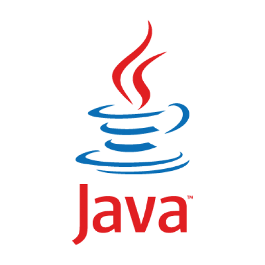
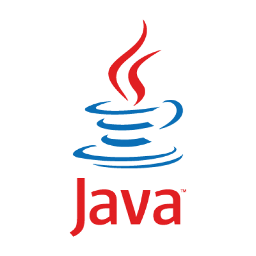
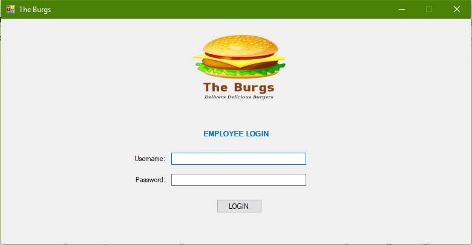

About Me
I am Paul Chester D. Villanueva, currently a BSIT student of the University of Southeastern Philippines. I was born on January 15th of the year 1998 on Milagros, Masbate. I spent my elementary days at Milagros East Central School and my highschool years at Liceo de San Jose.
My hobbies include reading, writing, playing video games, programming, listening to music, and watching movies. I am a person with considerable skill in my field. My experience over the years as a programmer gave me insight and foresight when I am at work. I am confident with my skills.
I am the youngest child in my family with two older brothers. As a child, I was always surrounded with books and reading them opened my mind to the wonders of literature, science, and philosophy. My personal motto is "Knowledge is power". I do not always conform to the whims of society.
Back to Top
My Skills

 

As a BSIT student, I studied basic programming and mark-up languages and became knowledgeable about them. I have experience using HTML5, CSS3, JavaScript, C#, C++, and Java. I am currently learning about PHP. I also have experience with using PostgreSQL and MySQL for relational databases.
I am also a fluent English speaker and writer. As a former student journalist, I have been to many places to cover events and news. I have been an editorial writer, feature writer, sports writer, and broadcaster. I am also able to speed read and acquire important information simultaneously. My vocabulary is immense and I am also able to speak another dialect.
As a science enthusiast, I am also knowledgeable about many scientific discoveries and theories. I am also updated about the progress of technology. When at work, I operate with decisive logic and seriousness. I am always calm and collected.
Back to Top
My Recent Works
Last June 2017, my groupmates and I created a burger ordering system for Windows OS named 'The Burgs'. It was written in C# using Visual Studio 2017 alongside PostgreSQL as the database. We created custom Dynamic-link Libraries (.dll) for our system. As the project team leader and core programmer, we were able to successfully finish the project.
Of course, this website is also a recent work of mine. I invested time and effort to polish this website with only HTML and CSS and not using existing frameworks or JavaScript. My website design theme was inspired a little by Material Design with a minimalistic approach and a personal touch. All images that I used was optimized and compressed for faster loading time.
This website was written with Atom text editor, is optimized for Google Chrome browser, and built to be responsive no matter the resolution of the device. It is also compatible with other web browsers such as Opera, Firefox, and Safari. This website can also be viewed on tablets with little to no decrease to responsiveness. The code is also open-source and is hosted on Github.
Back to Top
My Achievements
- Test